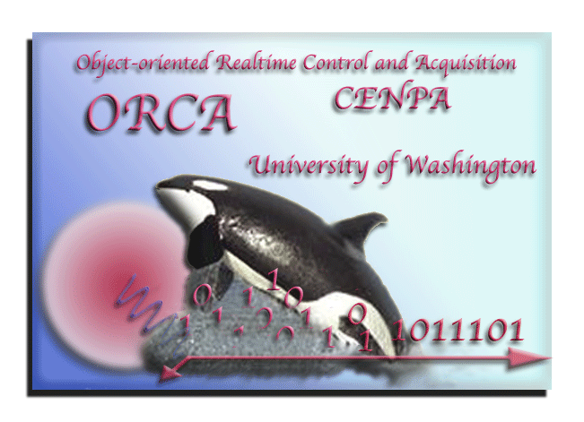

ORCA stands for Object-Oriented Realtime and Control Acquisition. ORCA evolved from SHaRC, an Object-Oriented DAQ programming project carried out by John Wilkerson and Frank McGirt at LANL in the 1980's and further refined by Mark Howe and others at the Center for Experimental Nuclear Physics and Astrophysics at the University of Washington during the 1990's.
The ORCA Team